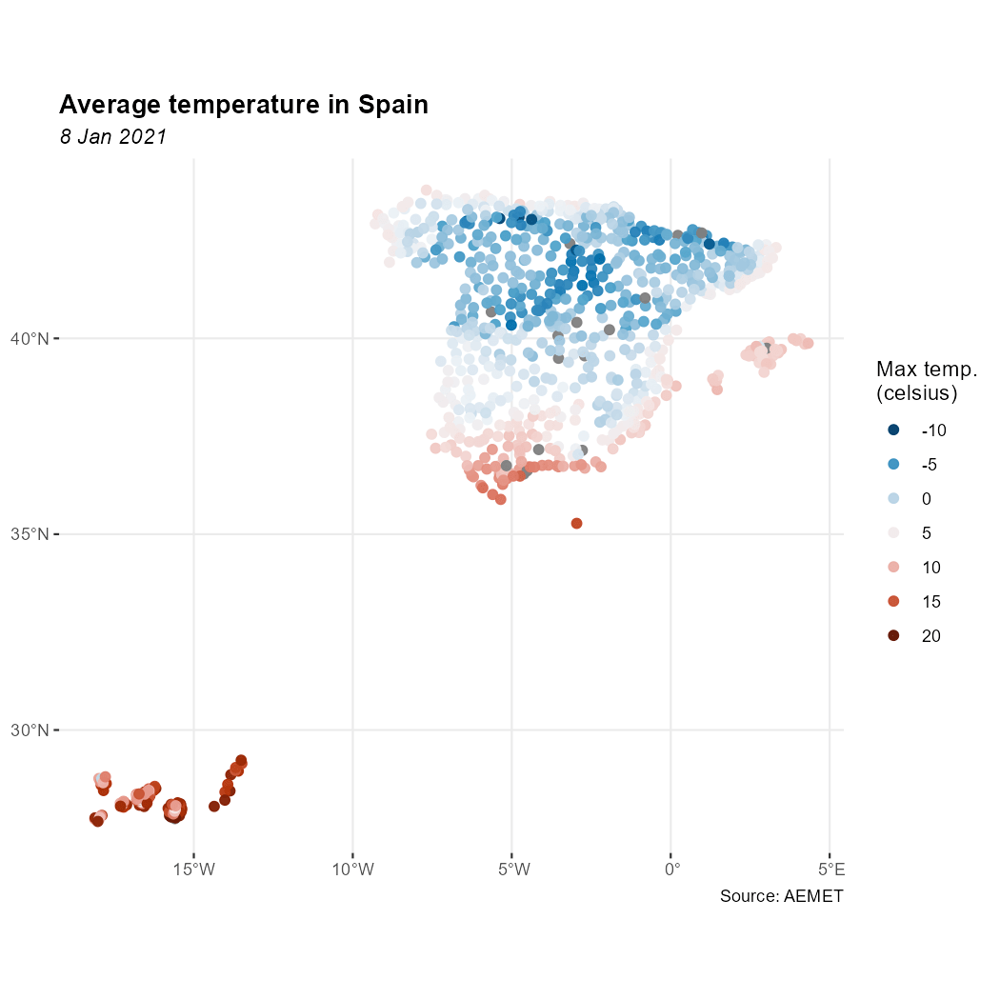

Get started with climaemet 1.0.0
Diego Hernangómez
2021-09-13
Source:vignettes/climaemet.Rmd
climaemet.RmdSince the last release, this package has been integrated into rOpenSpain, a community of R enthusiasts whose ultimate goal is to create high-quality R packages for data mining public Spanish open sources.
From version 1.0.0 onward, we have introduced some improvements and (breaking) changes on the package, in order to provide a smoother interaction with the AEMET API service.
You can easily spot which version of climaemet is running in your computer. On load, you could see the following message:
library(climaemet)
#>
#> Welcome to climaemet (1.0.0)
#> Note that since climaemet (>=1.0.0) the results are provided on tibble format. Run #> `climaemet_news()` to see the changelog.
#> If you experience any problem open an issue on https://github.com/rOpenSpain/climaemet/issues
#>
#>
#> AEMET_API_KEY variable detected on this session.If it is your first time using climaemet v1.0.0 you may see the following message:
library(climaemet)
#>
#> Welcome to climaemet (1.0.0)
#> Note that since climaemet (>=1.0.0) the results are provided on tibble format. Run `climaemet_news()` to see the changelog.
#> If you experience any problem open an issue on https://github.com/rOpenSpain/climaemet/issues
#>
#>
#> Check aemet_api_key() to see how you can set you AEMET API KeyWe have you covered! Run help("aemet_api_key", package = "climaemet") to learn how to set your API Key. We would explain the details on the next section.
API Key
Note for existing users
Your previous code will break. This is because we have deprecated the use of the apikey parameter in all the functions. This can be a little frustrating at the beginning but we believe the approach implemented in v1.0.0 is the way to go in terms of best practices.
Get your API Key
To be able to download data from AEMET you will need a free API key which you can get at https://opendata.aemet.es/centrodedescargas/obtencionAPIKey
Once that you have your API Key, you can use any of the following methods:
a. Set API Key with aemet_api_key()
This is the recommended option. Just type:
aemet_api_key("YOUR_API_KEY", install = TRUE)Using install = TRUE ensures that the API key is stored on your local computer and it would be reloaded every time you load the library. From now on you can forget about API keys!
b. Use an environment variable
This is a temporary alternative. You can set your API key as an environment variable
Sys.setenv(AEMET_API_KEY = "YOUR_API_KEY")Note that this is only valid for the current session. You would need to re-run this command each time you restart your session.
c. Modify your .Renviron file
This stores your API key permanently on your machine. You can start editing your .Renviron running this command:
usethis::edit_r_environ()Now you can add the following line to you .Renviron file:
AEMET_API_KEY = YOUR_API_KEYNew features
tidyverse format
From v1.0.0 onward, climaemet provides its results in tibble format. Also, the functions try to guess the correct format of the fields (i.e. something as a Date/Hour now is an hour, numbers are parsed as double, etc.).
See how a tibble is displayed:
# See a tibble in action
aemet_last_obs("9434")
#> # A tibble: 23 × 25
#> idema lon fint prec alt vmax vv dv lat dmax
#> <chr> <dbl> <dttm> <dbl> <dbl> <dbl> <dbl> <dbl> <dbl> <dbl>
#> 1 9434 -1.00 2021-09-12 20:00:00 0 249 3.6 2.4 93 41.7 98
#> 2 9434 -1.00 2021-09-12 21:00:00 0 249 3.1 2.3 106 41.7 123
#> 3 9434 -1.00 2021-09-12 22:00:00 0 249 5 3.1 119 41.7 120
#> 4 9434 -1.00 2021-09-12 23:00:00 0 249 5.9 3.9 118 41.7 130
#> 5 9434 -1.00 2021-09-13 00:00:00 0 249 5.2 3.3 102 41.7 113
#> 6 9434 -1.00 2021-09-13 01:00:00 0 249 5.1 2.5 104 41.7 98
#> 7 9434 -1.00 2021-09-13 02:00:00 0 249 5.6 3.2 118 41.7 133
#> 8 9434 -1.00 2021-09-13 03:00:00 0 249 5.5 3.6 121 41.7 125
#> 9 9434 -1.00 2021-09-13 04:00:00 0 249 4.6 2 101 41.7 118
#> 10 9434 -1.00 2021-09-13 05:00:00 0 249 3.5 2.4 109 41.7 133
#> # … with 13 more rows, and 15 more variables: ubi <chr>, pres <dbl>, hr <dbl>,
#> # stdvv <dbl>, ts <dbl>, pres_nmar <dbl>, tamin <dbl>, ta <dbl>, tamax <dbl>,
#> # tpr <dbl>, stddv <dbl>, inso <dbl>, tss5cm <dbl>, pacutp <dbl>,
#> # tss20cm <dbl>Note that when possible, data representing dates and numbers are converted to the right format.
Spatial objects: sf
Another major change in v1.0.0 is the ability of return information on spatial sf format, using return_sf = TRUE. The coordinate reference system (CRS) used is EPSG 4326, that correspond to the World Geodetic System (WGS) and return coordinates in latitude/longitude (unprojected coordinates):
# You would need to install `sf` if not installed yet
# run install.packages("sf") for installation
library(ggplot2)
library(dplyr)
#>
#> Attaching package: 'dplyr'
#> The following objects are masked from 'package:stats':
#>
#> filter, lag
#> The following objects are masked from 'package:base':
#>
#> intersect, setdiff, setequal, union
all_stations <- aemet_last_obs(return_sf = TRUE)
# Last hour
all_last <-
all_stations %>% filter(fint == all_stations[["fint"]][1])
last_hour <- max(all_last$fint)
ggplot(all_last) +
geom_sf(aes(col = ta),
shape = 19,
size = 2
) +
labs(
title = "Temperature in Spain",
subtitle = last_hour,
color = "Max temp.\n(celsius)",
caption = "Source: AEMET"
) +
scale_colour_gradientn(
colours = hcl.colors(5, "RdBu", rev = TRUE),
guide = "legend",
n.breaks = 7
) +
theme_bw() +
theme(
panel.border = element_blank(),
plot.title = element_text(size = 23, face = "bold"),
plot.subtitle = element_text(size = 16, face = "italic"),
plot.caption = element_text(size = 15),
legend.text = element_text(size = 15),
legend.title = element_text(size = 15)
)
Further enhancements
Other enhancements included on the v1.0.0:
- All the functions are now vectorized.
- New function
get_metadata_aemet(). - New function
ggclimat_walter_lieth(). This function is now the default forclimatogram_*functions (experimental). Old behavior can be reproduced with optionsggplot2 = FALSE. - Plot functions gains new parameters (
verboseand...). Now it is possible to pass colors to the plotting functions. - New example datasets:
climaemet::climaemet_9434_climatogram,climaemet::climaemet_9434_temp,climaemet::climaemet_9434_wind.
Site built with pkgdown 1.6.1.
Template by Bootstrapious . Ported to pkgdown by dieghernan.